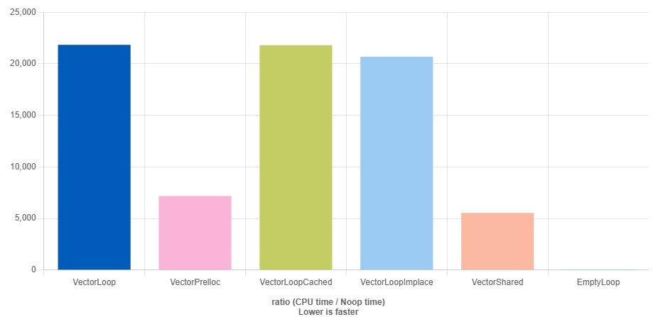
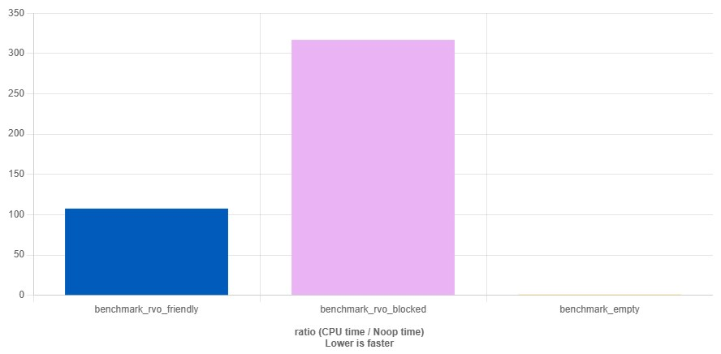
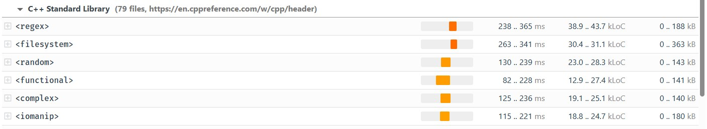
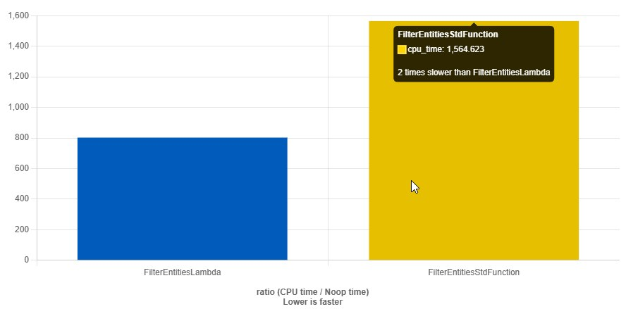
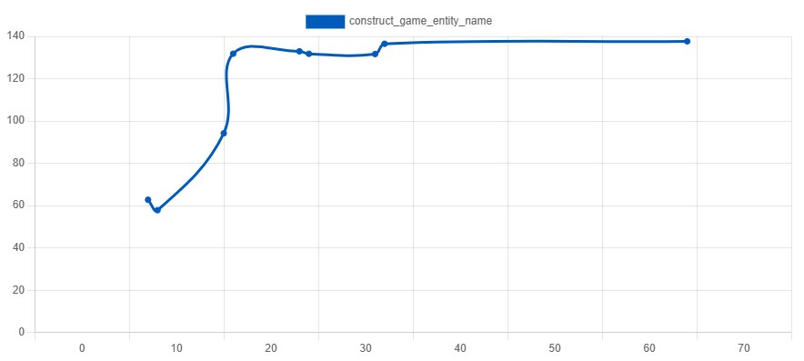
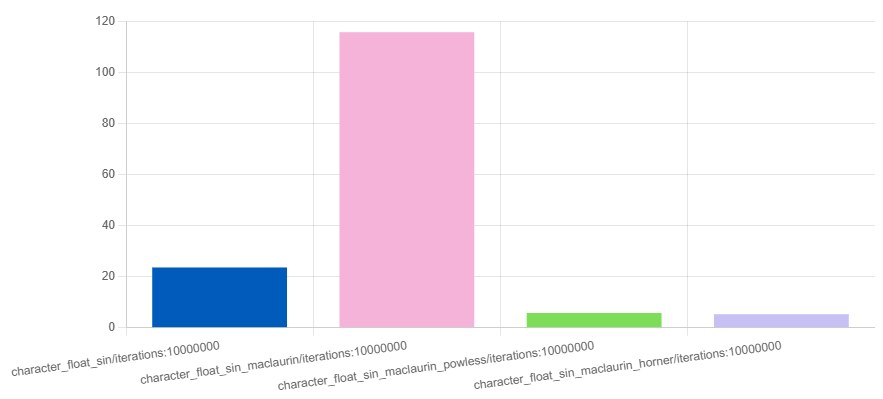
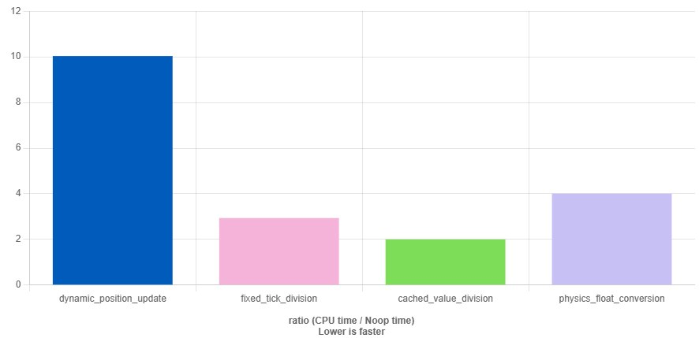
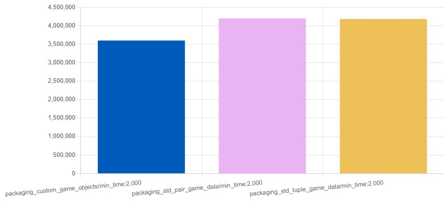

Стандартная библиотека C++ содержит множество классов и функций, которые легко интегрируются в проект, безопасны и протестированы на множестве кейсов. Однако за удобность и всеядность приходится платить производительностью. В играх, если производительность сразу не стоит на первом месте, то к концу проекта вы получаете такой технический долг, что проще бывает всё выкинуть и начать заново. Прямолинейное использование стандартной библиотеки в большинстве случаев, когда нужен производительный и эффективный код, я сейчас не только про игры, оказывается не лучшим выбором.
Примеры ниже завершают серию статей, в которой я постарался собрать интересные моменты использования разных структур данных, используемых при разработке игр, их расширений и возможностей для улучшения.
Статья рассчитана на читателей, которые не являются гуру C++ или знатоками тонкостей языка, но в целом знакомы с языком и его идеями, хотя знание ассемблера x86 не требуется, я буду прикладывать ссылки на примеры кода quickbench, чтобы объяснить, почему даю те или иные советы.
Иногда я тут буду ужасы рассказывать, но большинство этих случаев мешало нормальной работе софта в проде, так что пришлось относиться к ним с уважением.
Спасибо, хабраюзер, что прошел со мной этот путь через серию статей про плюсатый игрострой — от лёгкой акробатики со строками и контейнерами, до мудреных аллокаторов и многопоточки. Ты не только поддержал мой интерес к собиранию разрозненных кусочков в нечто целое и самостоятельное, но и помог превратить технические заметки в живой диалог о разработке игр. Надеюсь, эти статьи стали не просто хорошим чтением на выходные, но и поводом для собственных экспериментов, рефакторинга и новых идей. Игра ещё не окончена!
Game++. Bonus. Performance traps <=== Вы тут
Большинство тормозного кода появляется либо от лени, либо от большого ума, и обычно это действительно умный и модный код. Но вместо того, чтобы открыть профайлер, мы просто наворачиваем больше модного кода. Да и мощное железо очень сильно расслабляет, и вот ужеstd::map начинают использовать там, где должен быть простой массив. Или пихаем вездеstd::function, shared_ptr, variant, аллоцируем в рантайме, копируем в лямбде по значению, надеясь что компилятор что-то там «наоптимизирует», ну что-то он конечно оптимизирует, но думать за нас не будет. А потом QA жалуются, что игра на Xbox Series X лагает, как на калькуляторе. Кто же знал, что атомарные инкременты у shared_ptr не бесплатные? Все. Все знали. В современном софте тормозить может наверное всё, начиная от аллокаций, и заканчивая чтением с диска, ниже будет не очень большой список, но почему-то за все проекты в памяти ярко запомнились только эти случаи, но их было намного больше, всех не упомнить. Да и у тебя, уважаемый хабраюзер, наверняка есть пара историй, которые могут дополнить этот список, не стесняйся рассказать о них в комментариях. Поехали!
Выделение памяти - зло, зла на всех не хватает
Первое чему учатся при разработке игр под консоли - минимум алокаций в кадре, что в корне расходится с гайдлайнами комитета, по использованию контейнеров стандартной библиотеки (https://isocpp.github.io/CppCoreGuidelines/CppCoreGuidelines#Rsl-arrays)
SL.con.1: Prefer using STL array or vector instead of a C array
Reason C arrays are less safe, and have no advantages over array and vector. For a fixed-length array, use std::array, which does not degenerate to a pointer when passed to a function and does know its size. Also, like a built-in array, a stack-allocated std::array keeps its elements on the stack. For a variable-length array, use std::vector, which additionally can change its size and handles memory allocation.
Распространённый совет — предпочитать std::vector обычным C-массивам и статическим векторам, потому что это более безопасно и сохраняет контроль владения ресурсом. Это вполне разумно, особенно если мы предполагаем, что вектор будет расти в процессе работы. Однако если в росте нет необходимости, а производительность критична, есть способы добиться лучших результатов.
Обычно vector внутри хранит указатели, один или более, некоторые указатели (вроде конечного элемента и емкости) можно заменить на числа, но суть от этого не меняется, это все тот же последовательный кусок памяти:
begin— указатель на начало данных,end— указатель на позицию сразу после последнего элемента (используется для расчета текущего размера),capacity_end— указатель на конец выделенного блока памяти (определяет максимальный размер без перералокации).
struct vector {
T* begin;
T* end;
T* capacity;
};Эта тройка указателей позволяет std::vector быстро проверить размер, есть ли место для новых элементов, проитерироваться, сдвинуть, удалить и тд. Но за это приходится платить косвенным доступом к элементам: данные хранятся не внутри объекта, а по адресу, на который указывает begin. Это нарушает локальность данных в кэше, первые несколько обращений к данным вектора (обычно 10-15) пока внутренние структуры CPU не адаптируются к новому паттерну, проходят "вхолодную", они в несколько раз медленнее чем последующие обращения, поэтому работать с небольшими векторами даже накладнее, чем с большими, там всегда присутствуют cache-miss'ы и алгоритм не успевает "разогнаться". Такой эффект известен под именем "cold start" - это немного более общее понятие, но суть та же - маленькие структуры данных всегда дороже в обработке.
Эффект "холодного старта"
Когда вы впервые обращаетесь к элементам вектора, данные еще не загружены в кэш процессора, поэтому происходит много cache miss'ов. После нескольких обращений данные загружаются в кэш (L1, L2, L3), и последующие обращения становятся значительно быстрее - "cache warm-up".
Особенно заметно при:
Первом проходе по большому вектору
Обращении к данным после вытеснения из кеша (cold start)
Работе с векторами, размер которых превышает размер кэша (cache poisoning)
Для минимизации этого эффекта используютcя техники вроде:
Prefetching (предварительная загрузка данных)
Cache-friendly алгоритмы с хорошей пространственной локальностью
"Прогрев" кэша перед основными вычислениями
Даже если вектор маленький, его данные всегда находятся в куче (heap), что значительно дороже по временным затратам. Способ инициализации вектора имеет значение. Для конкретного примера предположим, что у нас есть число N, и мы хотим вернуть вектор, содержащий квадраты первых N чисел:
[0, 1, 4, 9, 16, ...]
Современная реализация вектора обложена большим числом проверок - на текущий размер, на выход за границы массива, на необходимость перераспределения памяти. Компилятор сгенерирует кучу дополнительного кода (в частности, вызовы operator new, memmove и operator delete) и обработку исключений, так что сгенерированный код оказывается сильно раздутым безо всякой на то причины. Даже для простой функции, которая возвращает некоторый массив элементов известного размера - будут включены все эти проверки. (https://godbolt.org/z/vK5W93z8W). Вот так пишут обычные разработчики, когда хотят вернуть некий массив значений, тут еще сделано резервирование памяти в векторе, иначе будет совсем грустно.
std::vector<int> createVector(int size) {
std::vector<int> result;
result.reserve(size);
for (int ii = 0; ii < size; ++ii) {
result.push_back(ii * ii);
}
return result;
}Asm (vector<int>)
makeVector(int):
push rbp
push r15
push r14
push r13
push r12
push rbx
sub rsp, 24
xorps xmm0, xmm0
movups xmmword ptr [rdi], xmm0
mov qword ptr [rdi + 16], 0
test esi, esi
js .LBB0_1
mov rbp, rdi
je .LBB0_27
mov r12d, esi
movsxd rbx, esi
lea rdi, [4*rbx]
call operator new(unsigned long)
mov r15, rax
mov qword ptr [rbp], rax
mov qword ptr [rbp + 8], rax
lea r9, [rax + 4*rbx]
mov qword ptr [rbp + 16], r9
xor r14d, r14d
mov r8, rax
mov rbx, rax
mov qword ptr [rsp + 16], rbp
mov dword ptr [rsp + 12], r12d
jmp .LBB0_6
.LBB0_7:
mov dword ptr [rbx], r13d
add rbx, 4
mov qword ptr [rbp + 8], rbx
add r14d, 1
cmp r12d, r14d
je .LBB0_27
.LBB0_6:
mov r13d, r14d
imul r13d, r14d
cmp rbx, r9
jne .LBB0_7
mov rdx, rbx
sub rdx, r8
movabs rax, 9223372036854775804
cmp rdx, rax
je .LBB0_9
mov rax, rdx
sar rax, 2
mov ecx, 1
test rdx, rdx
je .LBB0_13
mov rcx, rax
.LBB0_13:
lea rdx, [rcx + rax]
movabs rsi, 2305843009213693951
mov r12, rsi
cmp rdx, rsi
ja .LBB0_15
mov r12, rdx
.LBB0_15:
add rcx, rax
movabs rax, 2305843009213693951
cmovb r12, rax
test r12, r12
mov qword ptr [rsp], r8
je .LBB0_16
mov rbp, r15
mov r15, r9
lea rdi, [4*r12]
call operator new(unsigned long)
mov rbp, rax
mov r8, qword ptr [rsp]
mov r9, r15
jmp .LBB0_19
.LBB0_16:
xor ebp, ebp
.LBB0_19:
mov rdx, r9
sub rdx, r8
mov rax, rdx
sar rax, 2
lea r15, [4*rax]
add r15, rbp
mov dword ptr [rbp + 4*rax], r13d
test rdx, rdx
jle .LBB0_21
mov rdi, rbp
mov rsi, r8
mov r13, r9
call memmove
mov r9, r13
mov r8, qword ptr [rsp]
.LBB0_21:
add r15, 4
sub rbx, r9
test rbx, rbx
jle .LBB0_23
mov rdi, r15
mov rsi, r9
mov rdx, rbx
call memmove
mov r8, qword ptr [rsp]
.LBB0_23:
test r8, r8
je .LBB0_25
mov rdi, r8
call operator delete(void*)
.LBB0_25:
add rbx, r15
mov r15, rbp
mov rbp, qword ptr [rsp + 16]
mov qword ptr [rbp], r15
mov qword ptr [rbp + 8], rbx
lea r9, [r15 + 4*r12]
mov qword ptr [rbp + 16], r9
mov r8, r15
mov r12d, dword ptr [rsp + 12]
add r14d, 1
cmp r12d, r14d
jne .LBB0_6
.LBB0_27:
mov rax, rbp
add rsp, 24
pop rbx
pop r12
pop r13
pop r14
pop r15
pop rbp
ret
.LBB0_9:
mov edi, offset .L.str.1
call std::__throw_length_error(char const*)
.LBB0_1:
mov edi, offset .L.str
call std::__throw_length_error(char const*)
jmp .LBB0_29
mov rdi, rax
call _Unwind_Resume
mov r15, rbp
.LBB0_29:
mov rbx, rax
test r15, r15
je .LBB0_31
mov rdi, r15
call operator delete(void*)
.LBB0_31:
mov rdi, rbx
call _Unwind_Resume
Но если вы просто вернете некоторый заполненный массив элементов, такой облегченный массив, то компилятор создаст совсем другой код, свободный от этих обвесов. Половина возвращаемых результатов в виде векторов в приложении не меняется, а если не меняется - зачем использовать для этого дорогущий вектор?
std::unique_ptr<int[]> createSharedArray(int size) {
int *result;
result = new int[size];
for (int ii = 0; ii < size; ++ii) {
result[ii] = (ii * ii);
}
return std::unique_ptr<int[]>{result};
}Asm (std::unique_ptr<int[]>)
makeArray(int):
push rbp
push r14
push rbx
mov ebp, esi
movsxd rbx, esi
mov ecx, 4
mov rax, rbx
mul rcx
mov r14, rdi
mov rdi, -1
cmovno rdi, rax
call operator new[](unsigned long)
test ebx, ebx
jle .LBB1_11
mov ecx, ebp
cmp ebp, 7
ja .LBB1_3
xor edx, edx
jmp .LBB1_10
.LBB1_3:
mov edx, ecx
and edx, -8
lea rsi, [rdx - 8]
mov rbp, rsi
shr rbp, 3
add rbp, 1
test rsi, rsi
je .LBB1_4
mov rdi, rbp
and rdi, -2
neg rdi
movdqa xmm0, xmmword ptr [rip + .LCPI1_0]
xor esi, esi
movdqa xmm1, xmmword ptr [rip + .LCPI1_1]
movdqa xmm2, xmmword ptr [rip + .LCPI1_2]
movdqa xmm3, xmmword ptr [rip + .LCPI1_3]
movdqa xmm4, xmmword ptr [rip + .LCPI1_4]
.LBB1_6:
movdqa xmm5, xmm0
paddd xmm5, xmm1
movdqa xmm6, xmm0
pmuludq xmm6, xmm0
pshufd xmm6, xmm6, 232
pshufd xmm7, xmm0, 245
pmuludq xmm7, xmm7
pshufd xmm7, xmm7, 232
punpckldq xmm6, xmm7
pshufd xmm7, xmm5, 245
pmuludq xmm5, xmm5
pshufd xmm5, xmm5, 232
pmuludq xmm7, xmm7
pshufd xmm7, xmm7, 232
punpckldq xmm5, xmm7
movdqu xmmword ptr [rax + 4*rsi], xmm6
movdqu xmmword ptr [rax + 4*rsi + 16], xmm5
movdqa xmm5, xmm0
paddd xmm5, xmm2
movdqa xmm6, xmm0
paddd xmm6, xmm3
pshufd xmm7, xmm5, 245
pmuludq xmm5, xmm5
pshufd xmm5, xmm5, 232
pmuludq xmm7, xmm7
pshufd xmm7, xmm7, 232
punpckldq xmm5, xmm7
pshufd xmm7, xmm6, 245
pmuludq xmm6, xmm6
pshufd xmm6, xmm6, 232
pmuludq xmm7, xmm7
pshufd xmm7, xmm7, 232
punpckldq xmm6, xmm7
movdqu xmmword ptr [rax + 4*rsi + 32], xmm5
movdqu xmmword ptr [rax + 4*rsi + 48], xmm6
add rsi, 16
paddd xmm0, xmm4
add rdi, 2
jne .LBB1_6
test bpl, 1
je .LBB1_9
.LBB1_8:
movdqa xmm1, xmmword ptr [rip + .LCPI1_1]
paddd xmm1, xmm0
pshufd xmm2, xmm0, 245
pmuludq xmm0, xmm0
pshufd xmm0, xmm0, 232
pmuludq xmm2, xmm2
pshufd xmm2, xmm2, 232
punpckldq xmm0, xmm2
pshufd xmm2, xmm1, 245
pmuludq xmm1, xmm1
pshufd xmm1, xmm1, 232
pmuludq xmm2, xmm2
pshufd xmm2, xmm2, 232
punpckldq xmm1, xmm2
movdqu xmmword ptr [rax + 4*rsi], xmm0
movdqu xmmword ptr [rax + 4*rsi + 16], xmm1
.LBB1_9:
cmp rdx, rcx
je .LBB1_11
.LBB1_10:
mov esi, edx
imul esi, edx
mov dword ptr [rax + 4*rdx], esi
add rdx, 1
cmp rcx, rdx
jne .LBB1_10
.LBB1_11:
mov qword ptr [r14], rax
mov rax, r14
pop rbx
pop r14
pop rbp
ret
.LBB1_4:
movdqa xmm0, xmmword ptr [rip + .LCPI1_0]
xor esi, esi
test bpl, 1
jne .LBB1_8
jmp .LBB1_9std::unique_ptr
Разработчики компиляторов тоже знают об этом, и если вы используете шаблон вектора, сконструированного "под размер", то вызов будет очень похож на последний результат, который работает без большинства проверок. Этот код будет работать быстро, почти как сырая аллокация, если отработает RVO, ключевое слово тут ecли . RVO в реальных программах помогает, но это хрупкий механизм, об этом в следующем абзаце.
std::vector<int> createPrealloc(int size) {
std::vector<int> result(size);
for (int ii = 0; ii < size; ++ii) {
result[ii] = ii * ii;
}
return result;
}
https://quick-bench.com/q/ETpIgVgy1uwpYkJhn5tQRdegCm4
Жиза
В 19 году позвали меня (по знакомству) провести аудит кодовой базы движка одной питерской студии, которая уже думала уходить на Unreal, но бросать своё тоже не хотели. Название не скажу, но вы точно играли в одну из их hidden object игр. Старая команда, которая собственно движок писала, ушла в закат, а новая команда просто накидывала новый функционал под руководством ?ефективного менеджера, не особо разбираясь как движок был устроен под капотом. Не задумывались они и о производительности, от словам совсем, и по всему движку была раскидана работа с сырыми std::string, возврат мегабайтных векторов и создание std::map в циклах. Сказать что движку было плохо, это еще мягко. На среднем тогда андроиде игра выдавала 30 фпс на пустой сцене с парой десятков объектов, но т.к. сцены были в основном статичные, то фризы и просадки фпс никто особо не замечал. Посидели мы тогда со знакомым недельку над профайлером и выкатили отчет, что стюардессу дешевле будет закопать и уйти на Unreal. Вот так неправильная работа с памятью похоронила достаточно неплохой inhouse движок.
Коварный RVO
Самый простой способ начать управлять памятью — это выделять её динамически каждый раз, когда она нужна. Такой подход считается идеальным, поощряется во многих книгах по программированию и даже комитетом. Седой профессор по computer science, давно не дебаживший реальное приложение вещает студентам - как надо строить классы через строки, вектора и мапы - это не моя придумка - просто сходил на пару лекций к существующему "мэтру", когда пришлось фиксить fps drop от новых коллег.
И правда, пользоваться им очень просто. Нужен новый экземпляр анимации, когда игрок приземляется на выступ? Выдели память. Нужно воспроизвести новый звук, когда достигнута цель? Просто выдели ещё памяти.
Беспорядочное динамическое выделение памяти в теории помогает свести использование памяти к минимуму, потому что вы выделяете только то, что действительно нужно, и не больше. Но на практике всё оказывается намного хуже, поскольку у каждой аллокации вдруг оказывается неожиданно большой накладной расход, который начинает накапливаться, если программисты становятся слишком расслабленными. Это отличный способ отстрелить обе ноги компилятору, чтобы тот поменьше занимался оптимайзингом нашего кода.
struct ParticleSystem {
std::vector<float> particles; // вектор тут специально,
// был Particle, float тут просто для теста
ParticleSystem(size_t count) : particles(count, 1.f) {}
};
std::optional<ParticleSystem> make_editable_particle_system() {
ParticleSystem ps(100); // тяжелая аллокация
return ps;
}
std::optional<ParticleSystem> make_baked_particle_system() {
const ParticleSystem ps(100); // `const` блокирует RVO
return ps;
}
https://quick-bench.com/q/2ysRdpKJWSklB1mDA1b0EuFysuE
Жиза
Жила себе в одной игре система частиц, никого не трогала, никому не мешала. Пришло время порефакторить её и сделать более настраиваимой в редакторе эффектов — огонь, дым, искры, остаточные следы... Дали возможность дизайнерам настраивать около сотни параметров частицы, с разной динамикой и временем жизни. Всё выглядело великолепно в редакторе — эффект собирался из множества параметров, и можно было на лету менять цвета, скорость, типы частиц. Система возвращала этот эффект как объект ParticleSystem, который уже дальше передавали в игру.
Дизайнеры осмелели и начали выкатывать более сложные эффекты, да вот беда сцены начали фризить на них. Полезли в код, а там вот такая фигня с const ,который выключал RVO. То есть вместо одного создания объекта происходило создание + копирование. А так как объект был большим (один из эффектов перевалил за 10к элементов), это реально тормозило и на 60 fps был явный фриз, и ни один из тогдашних компиляторов не осилил сделать move. Почему там сделали конст и проглядели это на ревью, отдельная тема.
Тяжелый callback
Алокации памяти конечно вредны, но их хотя бы можно обнаружить профайлером и убрать, а вот c новомодными вещами вроде цепочки вызовов и колбеками всё намного сложнее. Допустим у нас есть некий набор юнитов и мы хотим пройтись по ним и выполнить некоторую работу, например запустить разную логику для друзей и для врагов. Старая логика написана через цикл с условиями, и некоторый payload:
struct GameObject {
uint32_t id;
float lifetime;
int visible;
GameObject() : id(0), lifetime(0.0f), visible(std::rand()) {}
};
bool isVisibleForEnemy(const GameObject &o) noexcept {
return o.visible && !(o.visible & (o.visible - 1));
}
bool isVisibleForFriends(const GameObject& o) noexcept {
constexpr std::uint64_t visibleForFriends = 0x8000;
return o.visible > 0 && (visibleForFriends & o.visible == visibleForFriends);
}
template <typename callback_type_>
void executeRealEntityWork(const GameObject& o, callback_type_ &&callback) noexcept {
if (o.visible) {
callback(o);
}
for (std::uint64_t condition = 1; condition <= o.lifetime; condition++) {
callback(o);
}
}
static void FilterEntitiesLambda(benchmark::State &state) {
float sum = 0, count = 0;
for (auto _ : state) {
sum = 0, count = 0;
for (const auto &o : entities) {
if (!isVisibleForEnemy(o) && !isVisibleForFriends(o))
executeRealEntityWork(o, [&](const GameObject &o) {
sum += o.lifetime;
count++;
benchmark::DoNotOptimize(sum);
});
}
}
}
В порыве рефакторинга захотели, значит, мы это дело переписать на std::function, чтобы все было по гайдлайнам, модно и красиво. И получаем увеличение времени работы функций и времени компиляции в несколько раз при использовании std::function в качестве колбэков. Хотя это упрощает интерфейс, это также приводит к (!возможным) выделениям памяти в куче и тащит в юнит компиляции "шумный" <functional> один из самых крупных заголовков стандартной библиотеки.

Тот же код, вид сбоку, но медленнее
template<class T>
void forEachEntities(T& ent, std::function<void(const GameObject& o)> const &callback) {
for (const auto &o : ent) callback(o);
}
void filterEntitiesStl( //
const GameObject &o,
std::function<bool(const GameObject &o)> const &predicate,
std::function<void(const GameObject &o)> const &callback) {
if (!predicate(o)) callback(o);
}
void executeRealEntityWorkStl(
const GameObject &o,
std::function<void(const GameObject &o)> const &callback) {
executeRealEntityWork(o, callback);
}
static void FilterEntitiesStdFunction(benchmark::State &state) {
float sum = 0, count = 0;
for (auto _ : state) {
sum = 0, count = 0;
forEachEntities(entities, [&](const GameObject &o) {
filterEntitiesStl(o, isVisibleForEnemy, [&](const GameObject &o) {
filterEntitiesStl(o, isVisibleForFriends, [&](const GameObject &o) {
executeRealEntityWorkStl(o, [&](const GameObject &o) {
sum += o.lifetime;
count++;
benchmark::DoNotOptimize(sum);
});
});
});
});
}
}
https://quick-bench.com/q/8WeASFxS-1cNykvdtZR2Hu14mlM
Жиза
Переделывали мы как-то игровой ИИ — вроде ничего особенного: behavior tree ноды, пару десятков условий и действий, всё на месте. И тут кто-то в кавычках умный (к сожалению, я) предложил: давайте вместо самодельных callback'ов и шаблонных функций запилим через std::function. Мол, читаемость, расширяемость, "гайдлайны C++ Core" и всё такое. Запилили — красота! Код стройный, интерфейсы аккуратные, можно везде передавать анонимные лямбды, хоть из скриптов, хоть из кода, можно на лету поменять часть поведения. Всё гибко, всё по гайдлайну. Праздник для дизайнера прям.
Сильно хуже стало, когда отдали это в "прод". Сначала выросло время билда, не сильно - порядка 10%, но на новую систему перевели только 2 NPC из сотни. Стали смотреть CI, нашли сотни включений <functional> 27Kloc, который нашим неосторожным фиксом пролез очень много куда, дальше — хуже: начались периодические фризы в кадре. Причём не от рендеринга, не от загрузки, а прямо в логике ИИ. Что за х...
Начали смотреть — а std::function, оказывается, иногда аллоцирует в куче. Особенно когда туда попадает не просто лямбда, а лямбда с захваченным стейтом. А у нас эти функции вызываются по несколько сотен раз в кадр, и тенденция имела место к росту, потому что подключались новые NPC. Вот тебе и «возможные аллокации». На плойке эти аллокации стали дергать аллокатор так, что FPS просел в два раза. В итоге… всё выкинуть и вернуть обратно было уже поздно, больше года потрачено на новый ИИ, так что пришлось долго и упорно с профайлером в обнимку чинить эту мелочь и писать workaround'ы.
Иногда "модно" и "красиво" — это роскошь, которую в runtime не все могут себе позволить.
Дорогие идентификаторы
Многие библиотеки, включая STL (std::string), Folly::fbstring или boost::string, используют технику под названием «оптимизация малых строк» (SSO, Small String Optimization). Это приём, при котором короткие строки хранятся прямо внутри объекта строки, без выделения памяти в куче. Благодаря этому улучшается производительность и снижается фрагментация памяти, особенно при частых операциях со строками малой длины (например, идентификаторы, имена, ключи). Реализация SSO зависит от компилятора и стандартной библиотеки. В libstdc++ (GCC 13), std::string обычно хранит строки длиной до 15 байт прямо в объекте (sizeof(std::string) = 32 байта). В libc++ (Clang 17), лимит составляет 22 байта при sizeof(std::string) = 24 байта. Кастомные реализации строки также обычно поддерживают до 32 байт локального хранения, и обычно этого хватает для большинства идентификаторов, пока в движок не приходит компонентная система, и длинные составные строчки. И тут длина строки начинает непосредственно влиять на производительность игры, и есть смысл переходить на другие системы идентификаторов, не завязанные на строки.

https://quick-bench.com/q/J5ZTH1z_E7dE3OSU4ih3S2lB4II
Жиза
В Sims Mobile, вся внутриигровая логика — от действий персонажей до поведения объектов и триггеров в доме — была построена на колбеках и взаимодействии через строковые идентификаторы, в оригинальном Sims была такая же система но на числовых id'шках, перенести её в Unity не получилось в силу разных причин, поэтому была написана своя на raw строках.
Отчасти это было сделано временно для удобства отладки. У каждого объекта были десятки параметров: "fridge_open", "bed_sleep_short", "career_event_barista_1", "interaction_social_highfive" и так далее. Дизайнеры могли накидывать реакции просто составив разные строки и повесив на них обработчик, например fridge_open_sim_pants, если сим открыл холодильник в условных трусах.
В ранних билдах вся эта информация хранилась и передавалась через копирование, чтобы иметь возможность делать трейсы и логи работы. Это упрощало отладку, делало инструменты удобными для дизайнеров, но время шло, и временная система стала основной, и все забыли для чего её вообще делали, но в проде стало проявляться слишком много проблем.
Самая большая боль — время загрузки, на обычный уровень уходило по 3-4 минуты, понятно что игроки не будут просто тупить в экран это время, даже самые преданные симоводы. Дом симов с десятками объектов и несколькими активными симами, которые имели свои состояния и очереди действий, вызывал лавину строковых сравнений. Игрок видит как "сим встал с кровати и пошёл умываться", а в коде под капотом происходит сотни строковых сопоставлений: какая анимация? какой тип взаимодействия? какой костюм? Все это — длинные, составные имена, зачастую по 130+ символов.
С наполнением контентом пошли микрофризы даже от банальных действий: сим пытается выбрать доступный туалет — и тратит на это 2–3 мс, просто перебирая строковые ключи в логике маршрутизации. Казалось бы, фигня, но когда у тебя на экране 4 сима и 500 активных объектов, и все они активно что-то делают, игра начинала заикаться, особенно на слабых девайсах.
Пришлось переделывать, вместо строк — целочисленные ID. Каждой строке, участвующей в логике, на этапе сборки назначался стабильный uint32_t, а в рантайме происходило только сравнение чисел. Это сняло большую часть проблем: сцены стали загружаться быстрее, симы принимали решения моментально, а фоновая симуляция (даже когда пользователь в меню) перестала сжирать батарею телефона. Дизайнерам сделали все красиво и удобно и они почти не плакали, но это отдельная история.
Мораль - больше никто не предлагал "а давайте просто передадим строку в параметрах".
Бешеный синус
Функции стандартной библиотеки, такие как sin, cos, tan и другие, реализованы с акцентом на максимально возможную точность. Для этого используются сложные алгоритмы, что существенно замедляет выполнение, поэтому многие разработчики предпочитают писать свою тригонометрию, с меньшей точностью.
Абсолютная точность не всегда критична. Допустимо использовать приближённые методы, чтобы существенно ускорить вычисления — например, когда точность до четвёртого знака после запятой уже избыточна. Одним из таких приближений является разложение функции синуса в ряд Тейлора — Макларена и представить функцию в виде полинома около некоторой точки. Если ограничиться первыми несколькими членами разложения, то выражение для sin(x) будет выглядеть так:
sin(x) ≈ x - (x³)/6 + (x⁵)/120Такие приближённые синусы применяются при симуляции дыхания, качания листьев, парящих объектов, колебаний на воде или симуляции ветра в лужах. К тому же можно делать синус еще проще на слабых устройствах.
Попытка сделать правильно и по формуле, скорее всего, провалится и будет дороже чем оригинал, потому что cpu умеет считать синус хардварно:
std::pow(phase, 3) / 6 + std::pow(phase, 5) / 120Такой подход резко снижает число операций с плавающей точкой, особенно если избавиться от вызовов std::pow и заменить их вручную раскрытым умножением. Точность при этом теряется, особенно на больших значениях аргумента, но для небольших значений x результат получается достаточно близким к реальному и вычисляется в разы быстрее. Никто и не говорил, что листья должны описывать идеальные круги.
double x2 = phase * phase;
double x3 = x2 * phase;
double x5 = x3 * x2;
offset = phase - x3 / 6.0 + x5 / 120.0;
https://quick-bench.com/q/HTCdf5dII1Be1vvb02rv_DGrhjw
Жиза
В Sims Mobile не использовались привычные анимации для персонажей - слишком много было действий с объектами, которые надо было анимировать, но симы должны были быстро и плавно анимироваться при прогулке по дому, поднимании кружки, открывании холодильника и других действиях. Вместо этого была написана система анимации по кривым, построенным между локаторами (точками на объекте). Т.е. можно было задать точку на кружке и точку на руке, и сим плавным движением перемещал руку к кружке, а потом также плавно ко рту.
Внутри анимации каждая конечность симов — ноги, руки, голова — работала как физическая кость, управляемая по заданным кривым. Эти кривые строились из синусоидальных функций, чтобы действия выглядели реалистично. На каждый тик симуляции в коде вызывались сотни вызовов std::sin, на каждого сима, на каждую анимируемую кость. Даже на современных чипах ARM это было проблемой — что уж говорить про ведроиды среднего уровня.
Как временное решение заменили std::sin на приближение с помощью ряда Макларена. Визуально анимации остались прежними — плавными и живыми, ну как минимум продюсеры не заметили. А вот фпс вырос — на 8–10 FPS в сцене.
Через пару месяцев в проект завезли уже нормальную реализацию с табличной интерполяцией и SIMD-инструкциями, но именно этот "грязный" ряд Макларена спас не один седой волос лида прогеров.
Медленное деление
Вычисления с плавающей точкой более ресурсоёмкие, но целочисленные операции могут неожиданно оказаться значительно хуже по производительности. Особенно это касается операций деления (/) и взятия остатка (%), которые считаются одними из самых медленных арифметических операций в процессоре. Деление 32-битных целых чисел обычно занимает около 10 тактов ЦП — это примерно 2,5 наносекунды.
Если делитель известен на этапе компиляции, компилятор может выполнить оптимизацию под названием strength reduction (https://en.wikipedia.org/wiki/Strength_reduction)
В этом случае деление заменяется на более быстрые инструкции умножения и сдвига, даже для таких крупных чисел, как максимальное 32-битное. Эта замена позволяет сделать деление более дешёвым. Для того чтобы компилятор воспринял значение как известное на этапе компиляции, достаточно просто использовать const или constexpr для оптимизации. Но современные компиляторы могут делать вывод о неизменности сами при анализе времени жизни переменной (особенно это любит делать clang, из-за чего могу появляться другие баги, но это отдельная история) .
Существует и другой интересный приём: деление целых чисел через числа с плавающей запятой. Поскольку 64-битный тип double способен точно представлять любое 32-битное знаковое целое число, можно безопасно преобразовать int в double, выполнить деление с плавающей запятой и привести результат обратно к int. Это позволяет использовать блоки процессора, предназначенные для операций с double, которые выполняют деление вещественных чисел всего в пять раз быстрее, чем целочисленный ALU целых.

https://quick-bench.com/q/HhAWEpdX5L96VlVcqTb7pz18C6A
Жиза
Жизы не будет, мощности современных процов хватает, чтобы мы меньше задумывались о совсем уж таких мелочах. Но иногда все же приходится - во время портирования игры (XBlades 2) на Nintendo Switch мы столкнулись с неожиданной проблемой — у этой платформы был откровенно слабый блок ID в ALU, при большом количестве операций деления целых чисел в кадре наблюдалось падение фпс (условно падало на 1-2 кадра). Анализ снапшотов профайлера показал, что много времени уходит именно на операции целочисленного деления, которые отлично без проблем работали на пк и больших консолях, и которые активно использовались в логике расчёта всего в игре, начиная от игровых механик и заканчивая данными для шейдеров. Добавьте сюда относительно медленный проц ~1Ghz олучите неприятный бонус в виде общего замедления. Править в не стали, ибо это был миллион мест и много часов работы, изменили код только с совсем горячих функциях.
Цена промахов в кеше
Однажды мне пришлось работать вот с таким движком.
class GameObject {
Transform* transform;
AIBeh* ai;
PhBody* physics;
Animation* animations;
// ... много еще компонентов ...
};И такой подход был в каждом классе, вплоть до позиций объектов Point(x, y, z) и самих переменных x, y, z. Для чего так было сделано? Ну вот прихо(д/ть) архитекта. Если вы подумали про отдельные пулы памяти для компонентов, которые бы возвращали указатели на предвыделенную память - раздумайте.
Код был просто написан так, как написан - каждый объект создавал всё нужное ему динамически, что было не нужно, не создавал, так писали сразу, видимо команда верила в обещание "zero cost everything" от комитета. Не верьте - за всё приходится платить, даже за пустые указатели.
Что творилось с кешем - отдельная песТня. Точных цифр я не помню уже, но было как-то так:
L1 cache misses: 70+%
L2 cache misses: 60+%
L3 cache misses: 40+%Т.е. половину времени процессор просто ждал данных, ну или пытался их достать из оперативки. Что происходит при такой организации данных можно посмотреть на этом бенчмарке.
Бенчмарк безобразия
enum class AccessPattern { Linear, Random };
struct Position {
float x, y, z;
};
struct Health {
int value;
};
struct Team {
int id;
};
template <AccessPattern pattern>
static void GameObjectAccessCost(benchmark::State &state) {
const size_t objectCount = static_cast<size_t>(state.range(0));
struct GameObject {
Position* pos = new Position();
Health *health = new Health();
Team* team = new Team();
};
std::vector<GameObject> gameObjects(objectCount);
std::random_device rd;
std::mt19937 gen(rd());
std::uniform_int_distribution<int> healthDist(50, 200);
std::uniform_real_distribution<float> posDist(-1000.0f, 1000.0f);
for (auto &obj : gameObjects) {
obj.pos->x = posDist(gen);
obj.pos->y = posDist(gen);
obj.pos->z = posDist(gen);
obj.health->value = healthDist(gen);
obj.team->id = healthDist(gen) % 4;
}
std::vector<size_t> accessOrder(objectCount);
if constexpr (pattern == AccessPattern::Random) {
std::iota(accessOrder.begin(), accessOrder.end(), 0);
std::shuffle(accessOrder.begin(), accessOrder.end(), gen);
} else {
std::iota(accessOrder.begin(), accessOrder.end(), 0);
}
for (auto _ : state) {
int totalHealth = 0;
float totalDistance = 0.0f;
for (size_t idx : accessOrder) {
const auto &obj = gameObjects[idx];
benchmark::DoNotOptimize(totalHealth += obj.health->value);
benchmark::DoNotOptimize(
totalDistance +=
std::sqrt(obj.pos->x * obj.pos->x +
obj.pos->y * obj.pos->y +
obj.pos->z * obj.pos->z));
}
benchmark::ClobberMemory();
}
}
BENCHMARK(GameObjectAccessCost<AccessPattern::Linear>)
->MinTime(1)
->RangeMultiplier(8)
->Range(8 * 1024, 128 * 1024 * 1024)
->Unit(benchmark::kMillisecond)
->Name("GameObjectAccess/Linear");
BENCHMARK(GameObjectAccessCost<AccessPattern::Random>)
->MinTime(1)
->RangeMultiplier(8)
->Range(8 * 1024, 128 * 1024 * 1024)
->Unit(benchmark::kMillisecond)
->Name("GameObjectAccess/Random");
Даже при последовательном доступе всё это упиралось в работу с памятью, или банально стояло в ненагруженных сценах, не в силах выжать даже 30 фпс.
Linear/8192/min_time:1.000 0.015 ms 0.015 ms 99556
Linear/32768/min_time:1.000 0.065 ms 0.065 ms 21854
Linear/262144/min_time:1.000 0.761 ms 0.762 ms 1906
Linear/2097152/min_time:1.000 9.66 ms 9.59 ms 145
Linear/16777216/min_time:1.000 77.1 ms 77.3 ms 18
Linear/134217728/min_time:1.000 608 ms 602 ms 2
Random/8192/min_time:1.000 0.018 ms 0.018 ms 74667
Random/32768/min_time:1.000 0.144 ms 0.144 ms 9956
Random/262144/min_time:1.000 2.75 ms 2.76 ms 498
Random/2097152/min_time:1.000 66.5 ms 66.2 ms 21
Random/16777216/min_time:1.000 666 ms 664 ms 2
Random/134217728/min_time:1.000 7715 ms 7688 ms 1Если вы сделаете простую компоновку, а не через указатели, уже станет лучше. Просто из-за правильной компоновки данных, имеем лучшую локальность данных и выше скорость работы.
struct GameObject {
float x, y, z;
int health;
int team;
};Linear/8192/min_time:1.000 0.014 ms 0.014 ms 99556
Linear/32768/min_time:1.000 0.055 ms 0.055 ms 24889
Linear/262144/min_time:1.000 0.446 ms 0.444 ms 3200
Linear/2097152/min_time:1.000 4.21 ms 4.21 ms 345
Linear/16777216/min_time:1.000 34.5 ms 34.3 ms 41
Linear/134217728/min_time:1.000 268 ms 269 ms 5
Random/8192/min_time:1.000 0.014 ms 0.014 ms 99556
Random/32768/min_time:1.000 0.055 ms 0.055 ms 25600
Random/262144/min_time:1.000 0.705 ms 0.703 ms 1867
Random/2097152/min_time:1.000 19.8 ms 19.7 ms 69
Random/16777216/min_time:1.000 221 ms 221 ms 6
Random/134217728/min_time:1.000 1910 ms 1922 ms 1Жиза
На мои робкие, тогда еще мидловские, замечания, что не все ладно в датском королевстве, просто накидывали больше задач. Команда движка была уверена в своей непогрешимости и верности выбранного пути. Испытательный срок я почему-то не прошел и ушел работать в EA. Через год, в 2015, та студия закрылась, не факт что из-за движка, но наводит на определенные мысли.
Мораль - цени кеш, иначе кеш не оценит тебя.
Руки прочь от std::pair там, где надо выжать еще скорости
В реальности любая программа требует памяти — ваш КО. Но на скорость работы влияет также - как эта память организована, какие структуры используются, как они размещаются в памяти - особенно в системах с ограниченными ресурсами.
Произвольные типы данных (ADT, Algebraic Data Types) — одна из наиболее желанных и мощных конструкций в современных языках программирования. Они позволяют создавать сложные типы, объединяя более простые — например, через комбинации "или" (sum types, варианты) и (product types, структуры).
В plain-c единственный способ моделировать ADT — это ручное комбинирование struct и union, зачастую с явным тегом для указания активного поля. Это сложно, чревато ошибками и требует аккуратного применения. В плюсах мы можем воспользоваться std::pair, std::tuple — для составных структур, std::variant — для вариативных значений,std::optional — для представления значения, которого может не быть.
Несмотря на кажущуюся простоту и удобство, использование этих типов не "бесплатно" по производительности и времени компиляции. Особенно это касаетсяstd::function — может приводить к скрытым выделениям памяти в куче, как я показал выше,<functional>, <tuple>, <variant> — одни из самых "тяжёлых" заголовков стандартной библиотеки, содержащие десятки тысяч строк шаблонного кода, этот код не может быть закеширован и будет пересобираться в каждом юните компиляции, да - только нужные части, но файл все равно будет парситься заново.
Наивно полагать, что std::pair работает так же быстро, как и простая struct { T1 first; T2 second; }. Всё зависит от нюансов - как компилятор оптимизирует шаблоны, включены ли отладочные флаги, какая реализация стандартной библиотеки используется (libstdc++, libc++, MSVC STL), как именно создаются и копируются объекты.

https://quick-bench.com/q/46NOXqH9MFwr0FB0NcoORdClHH8
Если у вас сотни объектов, не стоит задумываться о таких вещах как std::pair, вы не увидите разницы, разве что в профайлере. Если у вас сотни тысяч объектов, которыми оперирует движок (модели, текстуры, идентификаторы) - это выливается уже в секунды, минуты и часы реального времени. И даже 10% влияют на систему сборки.
Жиза
Питерский офис EA делали также и SimCity BuildIT один из первых ситибилдеров для мобилок, сам движок и система упаковки ресурсов были написаны на C++ Marmalade (движок) + Marble(система сборки): текстуры, анимации, данные уровней — всё проходило через сложный пайплайн, в котором был шаг по объединению метаинформации по каждому ресурсу в БД.
Сборка была написано подрядчиками (не основной командой) с активным использованием современных вещейstd::pair, std::tuple и std::function для универсальности. Каждая сборка бандла ресурсов (особенно для iOS) занимала примерно 140 минут, из которых около 60+ уходило на этап "метапакеров" — простые на вид, но нагруженные шаблонными структурами процессы, вроде парсинга текстур, получения размеров, подбор параметров для атласа, добавления в систему ресурсов и т.д.
Время росло вместе с добавлением новых объектов, а когда перевалило за два часа кто-то из команды (не автор статьи, у меня тогда еще лапки не доросли) полез смотреть, почему именно метапакеры тормозят. Запустил профайлер на билдерферме и увидел очень интересную картину: море времени тратится на генерацию и копирование объектов с типами std::tuple<std::string, std::function<bool(const ResourceInfo&)>> и std::pair<std::string, std::uint32_t>. Все эти конструкции передавались по значению между функциями и копировались многократно, просто какая-то фабрика по копированию всего, что было возможно.
После избавления от всего это "шумного кода" шаг метапаковки стал работать в несколько раз быстрее, время сборки бандла вернулось к 60 минутам, а сам билд стал меньше мучать оперативную память, что особенно было тяжко для Jenkins-нод с кучей параллельных билдов. На ретро ему выдали по шапке за то, что полез не в свою систему и теперь придется её сапортить, и подарили майку с логотипом студии за сокращение времени сборки билдов. Но спокойно можно было дарить новую skoda yeti - примерно на столько влетала контора каждый месяц по аренде мощностей для дженкинса. Такие правки редко попадают в презентации или гайды — чаще в эпик фейлы и ретро разборы.
Мораль - билдферма стерпит всё, за оптимизацию времени сборки можно получить майку и по шапке.
Расплата за виртуальность
Чтобы использовать виртуальные функции эффективно, особенно в контексте производительности игр, нужно заранее понимать, где и как они будут применяться. Это может показаться сложной задачей для разработчиков, привыкших к гибкости ООП, однако при наличии чёткого дизайна игрового объекта и системного подхода (это редкость, но бывает) можно определить, где полиморфизм действительно оправдан.
Есть одна важная философия проектирования, которую необходимо принять, чтобы виртуальные функции не стали узким местом: всё поведение в игре должно быть ограниченным и предсказуемым. Это не должно восприниматься как ограничение свободы разработки — это естественные ограничения времени кадра. Это означает, что любые системы, использующие виртуальные вызовы, должны избегать бесконтрольной виртуализации функций по чиху правой пятки.
Код бенчмарка
struct NonVirtual {
int DoWork(int x) const {
return x * 2;
}
};
struct VirtualBase {
virtual int DoWork(int x) const = 0;
virtual ~VirtualBase() = default;
};
struct VirtualDerived : VirtualBase {
int DoWork(int x) const override {
return x * 2;
}
};
static void BM_NonVirtualCall(benchmark::State &state) {
NonVirtual obj;
int sum = 0;
for (auto _ : state) {
sum += obj.DoWork(42);
}
benchmark::DoNotOptimize(sum);
}
BENCHMARK(BM_NonVirtualCall);
static void BM_VirtualCall(benchmark::State &state) {
std::unique_ptr<VirtualBase> obj = std::make_unique<VirtualDerived>();
int sum = 0;
for (auto _ : state) {
sum += obj->DoWork(42);
}
benchmark::DoNotOptimize(sum);
}
BENCHMARK(BM_VirtualCall);
static void BM_FunctionCall(benchmark::State &state) {
std::function<int(int)> func = [] (int x) { return x * 2; };
int sum = 0;
for (auto _ : state) {
sum += func(42);
}
benchmark::DoNotOptimize(sum);
}
BENCHMARK(BM_FunctionCall);------------------------------------------------------------
Benchmark Time CPU Iterations
------------------------------------------------------------
BM_NonVirtualCall 0.327 ns 0.297 ns 1000000000
BM_VirtualCall 1.75 ns 1.72 ns 373333333
BM_FunctionCall 1.46 ns 1.46 ns 448000000Жиза
История не совсем про игрострой, не совсем про виртуальные вызовы, но очень рядом. В конце нулевых случилось мне участвовать в разработке системы видеонаблюдения, которая снимала точки с определенных мест фрейма и пыталась строить по ним 3д модель лица, которое проходило некоторую область. Алгоритм дернули из OpenCV и основной структурой в нем былаMatrix4x4, классическая 4x4 матрица из float. Она применялась в трансформациях, вычислениях и вообще все описание лица - это был 4к набор этих матриц. Распознавание крутилось на каких-то серверах, турникетов было достаточно, проходящих лиц тоже, так что эта структура использовалась миллионы раз в секунду, но все работало приемлемо, распознавая условно 0.5 лица в секунду с одной камеры, сжирая дофига ватт.
Время шло, придумало начальство задачку уменьшить размер хранимых точек (читай матриц), сделали ТЗ - скинули команде, но вместо того чтобы использовать инструменты профилирования или шаблонные обёртки, ООПшные на всю голову прогеры просто сделали базовый классIMatrix с виртуальной функцией GetDiff(), от которого унаследовали Matrix4x4. Т.е. сама эта функция в расчетах не участвовала.
На первый взгляд идея выглядела безобидной: виртуальный вызов который возвращал дифф изменений от базовой матрицы, что обычно составляло 1-2% и позволяло не хранить все 4к точек. Вы наверное уже представляете, что случилось когда выкатили в прод это всё? Производительность вычислительного пайплайна резко упала.
Тут уже подключили профайлер и нормальных разработчиков для фикса баги. Добавление виртуальной функции привело к появлению vtable и увеличению размера Matrix4x4 с 64 до 72 байт. Это нарушило выравнивание и разрушило кэш-локальность, поплыли ровные смещения в массивах. Матрицы больше не лежали плотно и SIMD-логика стала работать хуже. Количество кэш-промахов резко возросло, что привело к тому, что функции, которые работали с матрицами, начали тратить больше времени. Особенно сильно пострадали сервера на архитектуре IA-64, где смещения и логика специально рассчитывались под аксимальную загрузку кеша и регистровую математику, и любое отклонение по выравниванию было очень критично.
В итоге одним днем все получили люлей, той же ночью откатили апдейт: виртуальные функции были удалены, Matrix4x4 снова стал POD-типом без vtable, и размер структуры вернулся к 64 байтам. Всю логику переписали через отдельную обёртку, которая делала это всё сама и в отдельном треде. Производительность вернулась к прежнему уровню. Почему так не сделали сразу, это уже отдельная история.
Мораль - никогда не добавляйте виртуальные функции в базовые math-структуры, особенно те, которые участвуют в tight loop'ах, SIMD-вычислениях или хранятся в рав массивах. Даже один virtual может сильно напортачить и серьёзно замедлить вычисления.
На этом, пожалуй, действительно, game over!
UPD: отдельная благодарность @Serpentine, который поредактировал и поправил ошибки в статьях.
← Все статьи